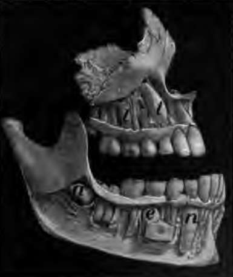
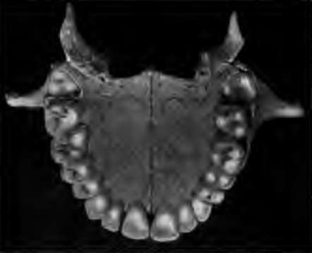
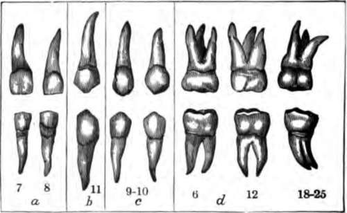
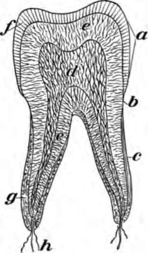
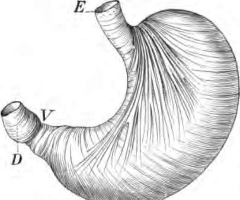

How Food Is Used By The Body. Part 2
Description
This section is from the book "The Human Body And Health", by Alvin Davison. Also available from Amazon: The Human Body and Health.
How Food Is Used By The Body. Part 2
How Alcoholic Drink Affects The Mouth
The organs of taste in the mouth are usually a safe guide in selecting food, but they may be injured by the use of alcohol. Few, if any, persons like beer or wine at first. These drinks, and also whisky and brandy, after daily use for several weeks, hurt the taste organs so that they are not satisfied with any other drink except that containing alcohol.
The strong desire for beer and wine is much more quickly aroused in the young than in those past middle life. On this account it is more dangerous for a boy to take a drink of liquor occasionally than it is for a man.
Fig. 27. Teeth of the upper jaw at three years of age. c is the eye tooth.
The Teeth
The mouth is furnished with two sets of teeth during life. The first set is known as milk teeth. There are ten of these in each jaw. The eight front ones used in biting off the food, are shaped like chisels and are called incisors. No teeth are present at birth, but all the incisors appear during the first year of life. The other milk teeth break through the gums by the time the child is two years of age. The eight back teeth of the milk set, used in crushing the food are the grinding teeth or molars.
Between the sixth and twelfth years, the roots of the milk teeth are absorbed, so that they drop out or may be easily pulled. The permanent teeth then grow into their places. In addition three permanent teeth appear in the back part of either half of each jaw. There are thirty-two permanent teeth. The first permanent molars appear at six years of age, just behind the milk teeth. The back tooth on each side in both jaws is commonly called, the wisdom tooth. It appears between the eighteenth and twenty-fifth year of age. Dogs, cats, horses and mice, all have two sets of teeth. Their teeth are shaped according to the work they have to do. The dog and cat, feeding on flesh, have sharp and cutting teeth, while the back teeth of the horse and cow have broad and flat grinding surfaces, to crush the hay and corn. Since man's back teeth are shaped for grinding and not for cutting such food as flesh, we ought to use much vegetable food.
Fig. 28. Part of the skull with the bone cut away to show permanent teeth e and i about to break through the gum.
Fig. 29. Teeth of a boy 18 years of age, in perfect condition. The wisdom tooth is just appearing.
Fig. 30. The permanent teeth of the right side. The numbers show at what age they appear; a, incisors; b, canines; c, premolars; d, molars.
How The Teeth May Be Ruined
The outer part of the tooth is covered with a thin layer of hard shiny substance called enamel. This protects the inner bony part or dentine from bacteria which cause decay. Bits of sweets, or other food particles, clinging to the teeth after eating, make the bacteria grow rapidly and produce an acid. This may soften the enamel and thus let the acid and bacteria get to the bony part of the tooth, which then decays rapidly. For this reason a strong thread called dental floss, or a tooth pick of quill, or of wood, should be used to remove the bits of food from between the teeth after eating.
The Care Of The Teeth
A tooth brush and warm water should be used morning and night to clean thoroughly, both the inner and outer surfaces of the teeth. To clean the upper teeth the brush should be drawn from the gum downward. To clean the lower teeth the brush should be drawn from the gum upward. A little good tooth powder used on the brush once a day is helpful.
Fig. 31. Section through a tooth, a, crown; b, neck; c, root; d, pulp of nerves and blood tubes; c, dentine; f, enamel; g, cement; h, nerves and vessels.
The care of the teeth in childhood will prevent much pain and sickness in later years. The cracking of nuts, or the biting off of thread or the ends of the finger nails is hurtful to teeth, as the enamel is likely to be cracked. The teeth should be examined twice a year by a dentist, and any decayed places repaired. Even the milk teeth often need to be repaired. Decaying teeth make the mouth sore so that the food is not well chewed. The stomach may then become sick and other illness follow. The cavities in decaying teeth are breeding places for disease germs.
Stomach Digestion
After the food has been chewed it passes back to the pharynx and is then squeezed into the gullet named esophagus. This is a straight tube leading from the throat to the stomach.
The stomach is a half-gallon sac, with an outer wall of muscle lined within by mucous membrane, made largely of gastric glands of which there are more than a million. These glands, each consisting of a tube with several branches, give out daily three quarts of gastric juice to dissolve the lean meat and other like foods.
Fig. 32. The stomach showing the muscles which churn the food. E, where food enters; V, entrance into the intestine, D.
Continue to:
- prev: Chapter VI. How Food Is Used By The Body
- Table of Contents
- next: How Food Is Used By The Body. Part 3